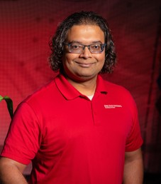

Organization
General Co-chairs

Sajal Das

Pandarasamy Arjunan

Agriculture is undergoing a rapid transformation driven by digital technologies, including IoT sensors, drones, satellite imagery, and mobile platforms, which generate vast streams of heterogeneous, temporally rich data. These advancements offer unprecedented opportunities for AI to enable smarter, more resilient, and efficient agricultural practices. As climate change increases variability in crop yields, pest outbreaks, and resource availability, traditional agricultural methods are proving inadequate in addressing these challenges. Although AI has started to tackle these issues through applications like crop forecasting, disease detection, and irrigation optimization, many existing solutions remain narrow in focus, difficult to generalize, and often lack scalability and adaptability. Furthermore, important human-centered concerns, such as transparency, fairness, and participatory system design, are often underexplored. The First International Workshop on AI in Agriculture (Agri AI), co-located at AAAI 2026, aims to address these gaps by bringing together researchers and practitioners to advance robust, responsible, and scalable AI methods tailored to real-world agricultural systems.
Data Foundations
Decision Intelligence and Scalable AI Models
Applications and Real-World Deployments
*All times are local (Singapore)(UTC+8)

The AI Institute for Resilient Agriculture (AIIRA) is advancing a suite of ambitious "moonshot" projects at the nexus of artificial intelligence and agricultural resilience. I will present our efforts to transform agriculture through AI-enabled tools that are both use-inspired and foundationally rigorous. Our vision includes scalable AI agents for pest identification and mitigation, 3D digital twins of plants for ideotype breeding, multi-modal sensing for field operations, and integration of large language/reasoning models for decision support. These efforts, powered by a transdisciplinary team, aim to democratize access, enable robust decision-making, and catalyze global collaborations to ensure a sustainable and productive agricultural eco-system.
Baskar Ganapathysubramaniam is Anderlik Professor of Engineering at Iowa State University. Baskar received his BTech from IIT Madras, and a PhD from Cornell University. He directs a curiosity driven, computational sustainability group (me.iastate.edu/bglab) with research interests in the areas of scientific computing, applied mathematics, and machine learning with applications in food, energy, and healthcare systems. He is the director of the NSF/USDA funded AI Institute for Resilient Agriculture (aiira.iastate.edu) which is a multi-institutional project focused on use-inspired AI developments.
The global food system is facing unprecedented challenges. In 2023, 2.4 billion people experienced moderate to severe food insecurity, a crisis precipitated by anthropogenic climate change and evolving dietary preferences. Furthermore, the food system itself significantly contributes to the climate crisis, with food loss and waste accounting for 2.4 gigatonnes of carbon dioxide equivalent emissions per year (GT CO2e/yr), and the production, mismanagement, and misapplication of agricultural inputs such as fertilizers and manure generating 2.5 GT CO2e/yr. To sustain a projected global population of 9.6 billion by 2050, food production must increase by at least 60%. Transitional sustainable agricultural practices can transform the sector from a net source of greenhouse gas emissions to a vital carbon sink. In this talk, Alok will cover the broad range of opportunities for ML experts to build transformative applications in the food and agriculture sector, and share learnings from his own team’s work at DeepMind.
Alok is the Sustainability and Agriculture lead at Google DeepMind. His team is focused on digitizing the agricultural sector using remote sensing and machine learning, to solve urgent problems faced by the sector in India and the rest of the global south, by enabling targeted data driven allocation of resources and services. He was a founding member of the Climate Trace initiative. He has been with Google in various teams for a decade, and worked in the tech industry for over 15 years.